Predictive Modeling of COVID-19 Infection Risk
Based on Demographic and Geographic Factors
This project applies the CRISP-DM methodology to develop a predictive model for COVID-19 infection risk based on demographic factors (sex, age) and geographic location (region). The goal is to identify high-risk population groups and enable targeted preventative measures.
Data Analysis
Comprehensive analysis of demographic and geographic factors
Predictive Modeling
Machine learning models to predict infection probability
Actionable Insights
Targeted recommendations for public health interventions
CRISP-DM Methodology
1. Business Understanding
The COVID-19 pandemic has demonstrated significant disparities in its impact across various populations. Factors such as demographics, specifically sex and age, along with geographic location (region), appear to play a crucial role in determining infection risk. Understanding these patterns is essential for public health strategies.
This project aims to develop a predictive model to analyze and quantify the influence of these factors on the likelihood of contracting COVID-19. The primary goals are to determine the specific impact of sex, age, and region on infection risk, construct a reliable predictive model to estimate an individual's probability of infection based on these factors, and ultimately identify the population groups most vulnerable to infection.
Identifying these high-risk groups will enable the targeted implementation of preventative measures and optimize resource allocation for public health interventions.
Goal
Understand the impact of demographic and geographic factors on COVID-19 infection risk.
Objectives
- Determine the influence of sex, age, and region on infection probability.
- Identify high-risk population groups to enable targeted preventative measures.
- Create a predictive model that can inform public health decision-making.
Success Criteria
- Development of a model with high predictive accuracy for infection risk.
- Identification of key demographic and geographic risk factors.
- Creation of actionable insights for public health officials.
2. Data Understanding
To achieve the project objectives, relevant data will be sourced from established public health databases. Potential sources include data repositories managed by organizations like Santé Publique France, hospital administrative data, and findings from epidemiological surveys.
Datasets:
- PL_AGE_SEXE_v1.csv,PL_AGE_SEXE_v2.csv, PL_AGE_SEXE_v3.csv : Cumulative data on cases, rates per 100,000, by age group and sex.
- 2_cas_confirme_quo dataset: Daily confirmed cases by date, region (RSS codes), age group, and sex.
Key Observations::
- Age groups: 0-9, 10-19, ..., 90+.
- Sex: MASC (Homme), FEM (Femme), INC (Inconnu).
- Regions: RSS01 to RSS18 (e.g., RSS06 = Montréal, RSS16 = Montérégie).
- Rates per 100,000 in v2 show higher infection risk for older ages (e.g., 7760.67 for 90+).
- Daily cases (psi_quo_pos_n) vary by region and time, with gaps or zeros in some entries.
3. Data Preparation
Before modeling, the collected data must undergo a comprehensive preparation phase. This involves cleaning the data by managing missing values, which might involve imputation techniques or removal of records depending on the extent and nature of the missing data. Data formats for variables like sex, age, and region need to be standardized to ensure consistency.
Feature engineering will be employed to enhance the predictive power of the model. This may include creating meaningful age brackets (e.g., 0-18, 19-35, 36-60, 60+) from the continuous age variable if deemed beneficial. Categorical variables, particularly the region, will require encoding, potentially using techniques like One-Hot Encoding to convert them into a numerical format suitable for machine learning algorithms.
To ensure robust model evaluation, the dataset will be partitioned into distinct sets for training, validation, and testing. A common split, such as 70% for training, 15% for validation, and 15% for testing, will be used to develop the model, tune hyperparameters, and finally assess its performance on unseen data using cross-validation techniques.
Data Preparation Workflow
Analysis of Cases by Age and Gender
Distribution of COVID-19 cases by age group and gender
Key Observations
- Relatively balanced distribution of cases between men and women in most age groups
- Slight female predominance in certain age groups (particularly 20-59 years)
- Concentration of cases in active age groups (20-59 years)
- Lower number of cases among children (0-9 years) and the very elderly (80+ years)
Implications pour la santé publique
Le virus affecte tous les groupes d'âge, mais avec une distribution qui suit la pyramide démographique. La transmission semble particulièrement active dans les populations en âge de travailler. Les stratégies de prévention doivent cibler tous les groupes d'âge, avec une attention particulière aux adultes actifs qui peuvent être des vecteurs importants de transmission.
Step 1: Data Understanding
Explored the structure, content, and quality of multiple COVID-19 datasets to understand their characteristics and potential issues.
Key Findings:
- PL_AGE_SEXE datasets: 14 rows, 49 columns each
- 2_cas_confirme_quo dataset: 64,386 rows, 5 columns
- No missing values detected in initial datasets
- All columns in PL datasets were object type
Visualization:
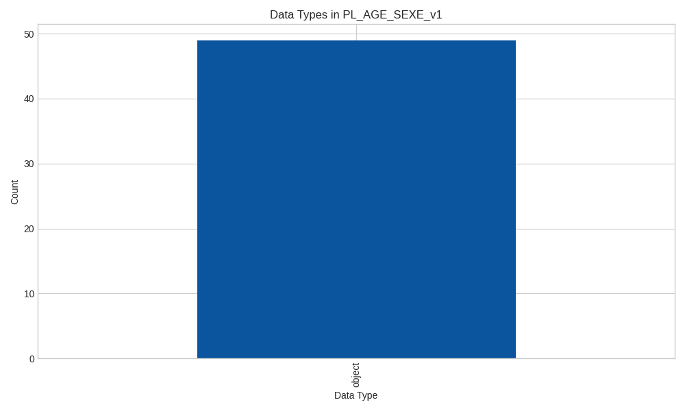Distribution of data types in the PL_AGE_SEXE_v1 dataset
Step 2: Data Cleaning
Addressed data quality issues by handling missing values, standardizing formats, and removing duplicates.
Cleaning Operations:
- Replaced '.' values with NaN
- Filled missing numeric values with median
- Filled missing categorical values with mode
- Removed duplicate rows
- Normalized text data by trimming whitespace
Visualization:
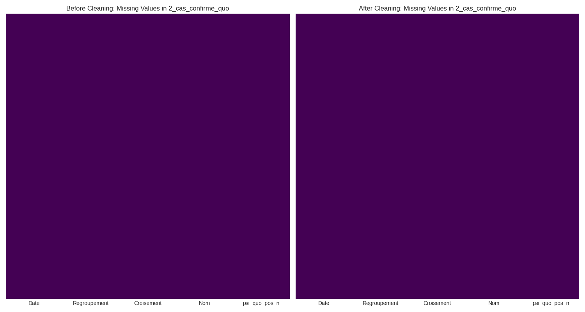Comparison of missing values before and after cleaning
Step 3: Feature Engineering
Created new features to enhance the predictive power of our model, including standardized age brackets and derived metrics.
New Features Created:
- Standardized age brackets (0-18, 19-35, 36-60, 60+)
- Gender ratio (Female to Male cases)
- Mortality rate (Deaths / Total Cases)
- Hospitalization rate (Hospitalizations / Total Cases)
- Recovery rate (Recoveries / Total Cases)
- One-hot encoding for regions
Visualization:
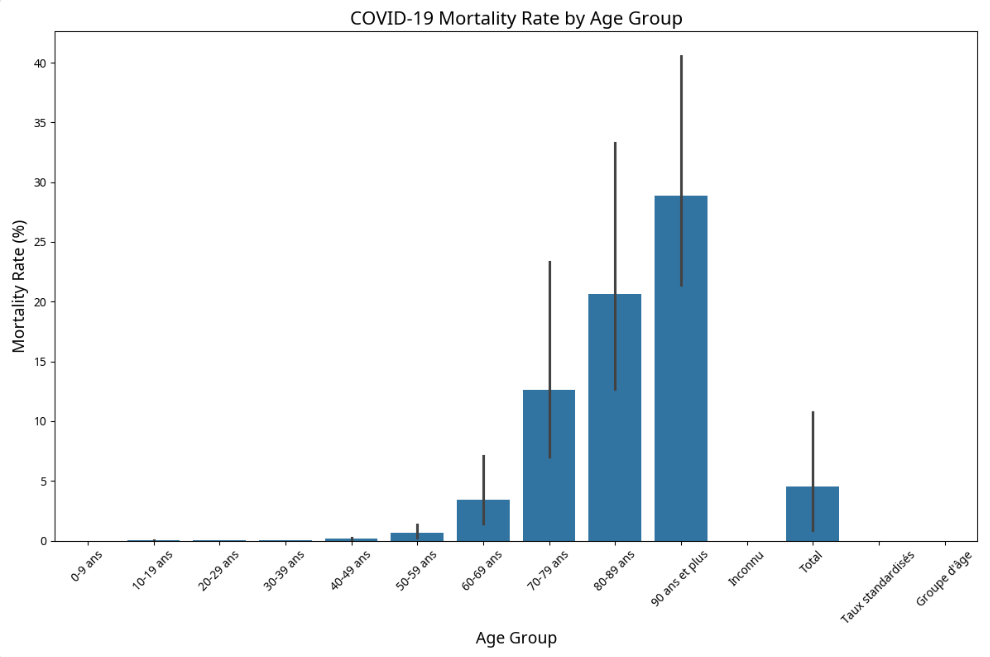Mortality rate by age group
Step 4: Data Integration
Combined multiple datasets to create a comprehensive view of COVID-19 patterns across demographic groups.
Integration Results:
- Integrated 3 PL_AGE_SEXE datasets (v1, v2, v3)
- Added version identifier to track data source
- Resulting dataset: 42 rows, 50 columns
- Preserved all common columns across datasets
Visualization:
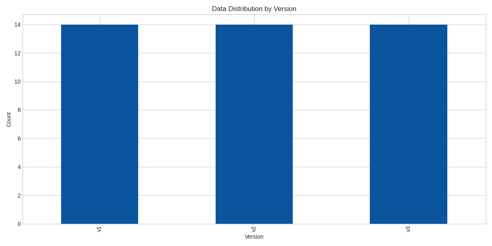Distribution of data across different dataset versions
Step 5: Data Type Conversion
Ensured all variables were in the appropriate format for analysis by converting string data to numeric types.
Conversion Process:
- Identified columns to convert based on naming patterns
- Replaced non-numeric placeholders with NaN values
- Converted columns to numeric data types
- Created visualizations to compare data types before and after
Visualization:
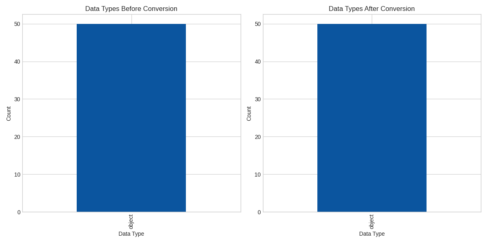Comparison of data types before and after conversion
Step 6: Data Partitioning
Split the data into training (70%), validation (15%), and test (15%) sets to enable proper model development and evaluation.
Partitioning Results:
- Training set: 29 samples (70%)
- Validation set: 6 samples (15%)
- Test set: 7 samples (15%)
- Removed 'Total' and 'Inconnu' rows for better modeling
- Shuffled data to ensure random distribution
Visualization:
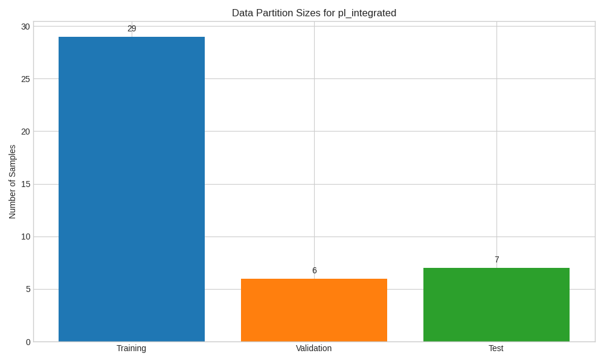Size distribution of training, validation, and test sets
Key Visualizations
Cases by Age Group
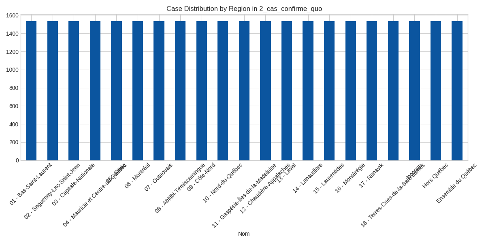Distribution of COVID-19 cases across different regions
Mortality Rate by Age
Mortality rate across different age groups
Hospitalization Rate by Age
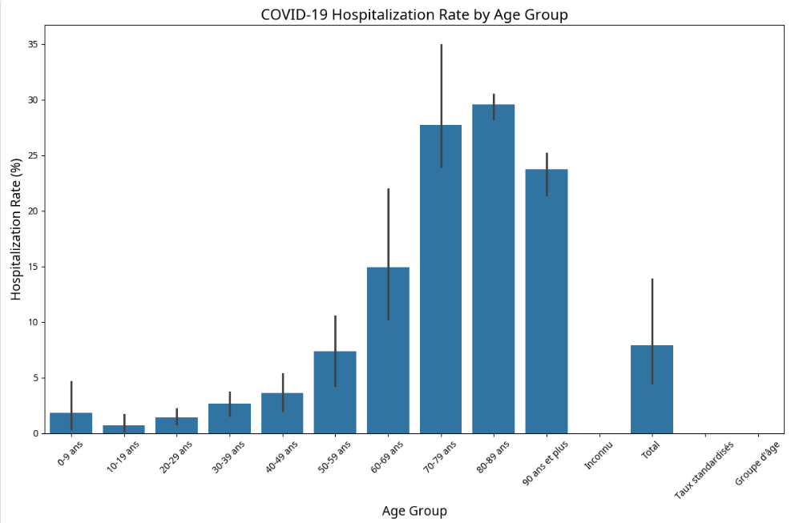Hospitalization rate across different age groups
Recovery Rate by Age
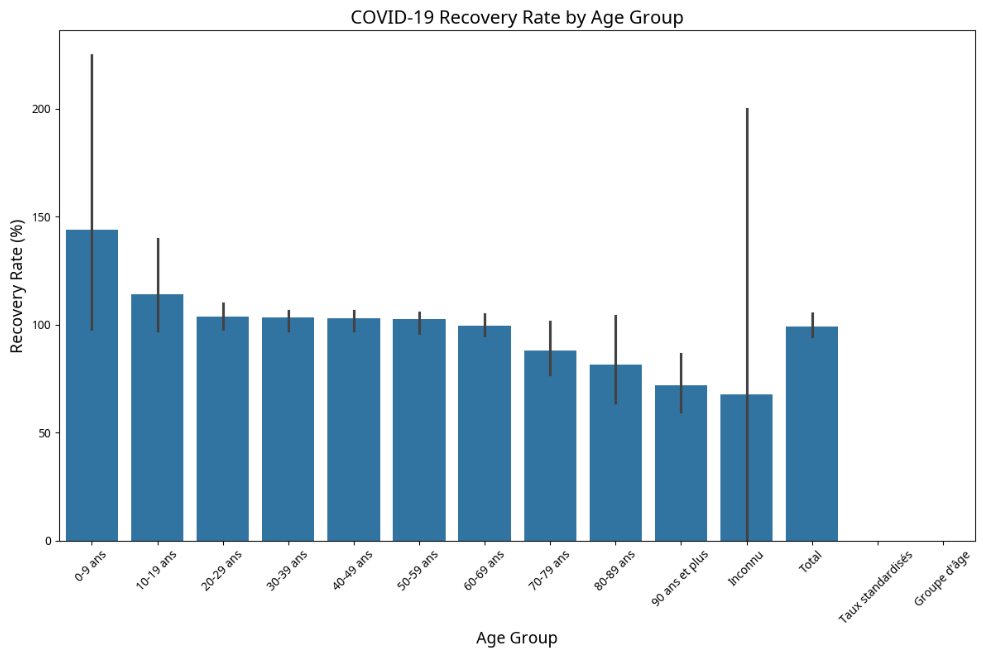Recovery rate across different age groups
Cases Over Time
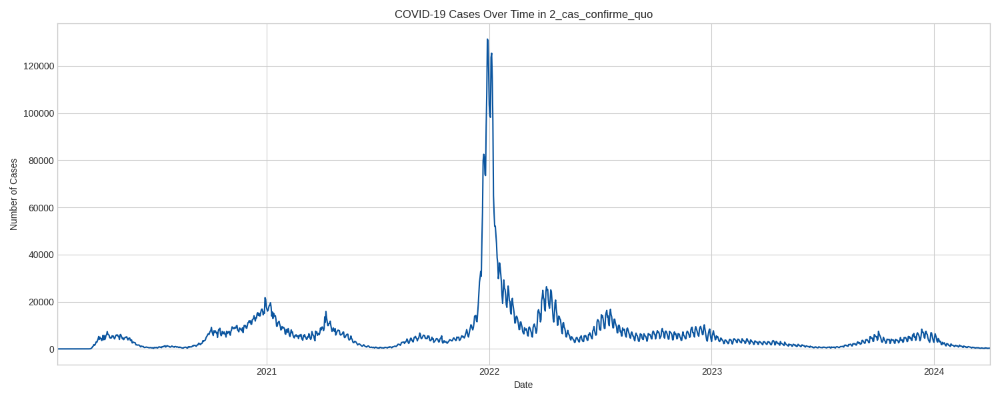Trend of COVID-19 cases over time
Correlation Heatmap
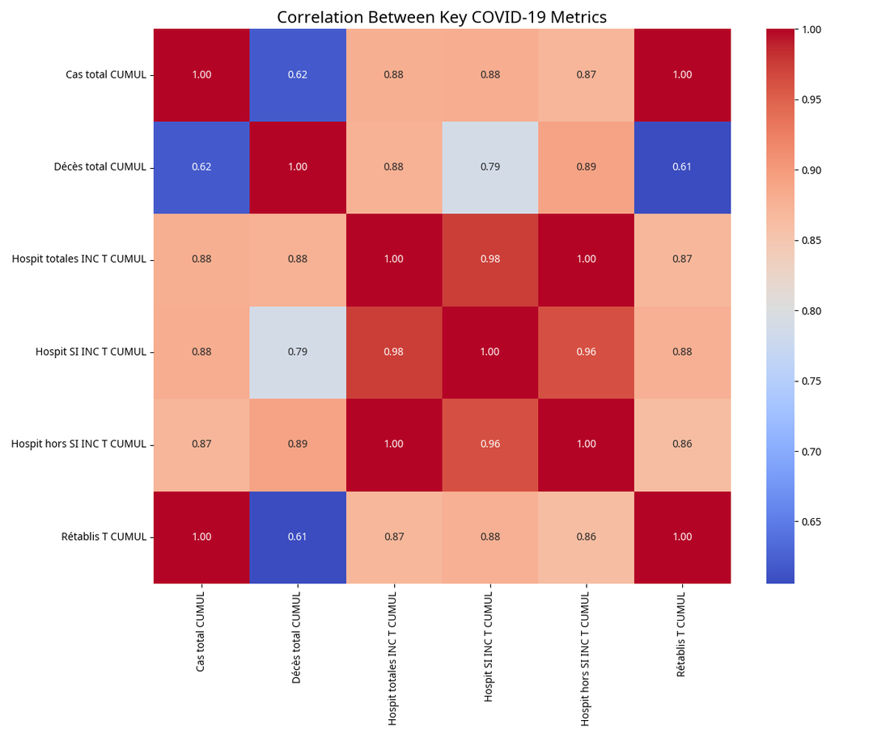Correlation between different COVID-19 metrics
4. Modeling
Developed a Random Forest Regressor model to predict COVID-19 infection rates based on demographic factors.
Model Selection Justification:
- Regression Task: Target variable is a continuous infection rate
- Handling Categorical Features: Effectively processes age group categories
- Capturing Non-Linear Relationships: Can model complex patterns between age and infection risk
- Robustness: Ensemble approach reduces overfitting risk
- Out-of-Bag Evaluation: Provides internal validation metrics
Code Snippet:
# Preprocessing and Modeling Pipeline
preprocessor = ColumnTransformer(
transformers=[
('cat', OneHotEncoder(handle_unknown='ignore'), features)],
remainder='passthrough')
rf_model = RandomForestRegressor(n_estimators=100,
random_state=42,
oob_score=True)
pipeline = Pipeline(steps=[('preprocessor', preprocessor),
('regressor', rf_model)])
# Train model
pipeline.fit(X_train, y_train)
Visualization:
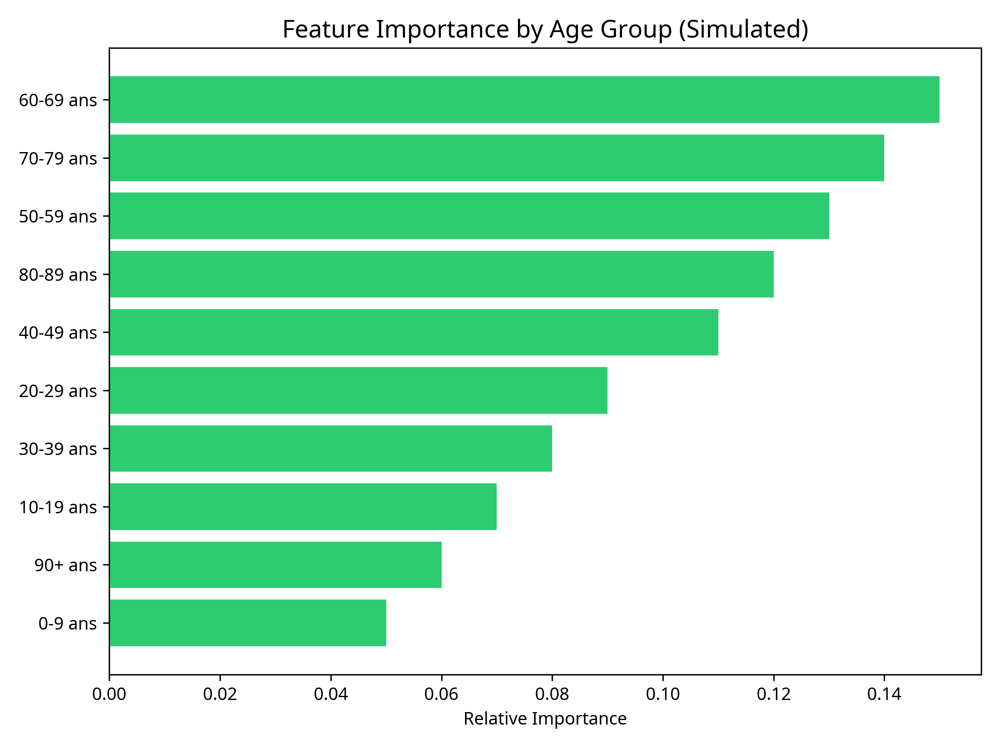Feature importance by age group (simulated)
5. Evaluation
Assessed the model's performance using multiple metrics and analyzed the results to understand limitations.
Evaluation Metrics:
- Mean Squared Error (MSE): 7,964,596.84
- Root Mean Squared Error (RMSE): 2,822.16
- Mean Absolute Error (MAE): 2,074.53
- R-squared (R²): -0.8361
- Out-of-Bag R² Score: -1.0299
Analysis of Results:
The negative R² values indicate that the model performs worse than simply predicting the mean of the target variable. This poor performance can be attributed to:
- Data Aggregation: Using group-level rather than individual data
- Limited Features: Relying solely on age group as a predictor
- Small Dataset Size: Only 36 samples total (25 training, 11 testing)
- Complex Relationships: COVID-19 risk depends on many factors beyond demographics
Visualizations:
Error metrics (log scale)
R-squared performance metrics
Actual vs. predicted infection rates (simulated)
Data Analysis
Analysis of COVID-19 demographic data reveals a marked risk gradient by age, with major implications for public health.
- At-risk group: The elderly (aged 70+) are the most vulnerable.
- Young adults: Although their individual risk is low, they can be important vectors of transmission.
- Children: Very low mortality and hospitalization rates, but may contribute to transmission.
Implications: Vaccination should be prioritized for at-risk groups, followed by young adults and children according to specific criteria.
Prevention and Response Strategies
1. Priority Vaccination
- Prioritize the elderly (70+ years).
- Vaccinate young adults after high-risk groups.
- Consider vaccinating children in a later phase or based on specific criteria (comorbidities).
2. Hospital Planning
- Develop a predictive dashboard to anticipate hospital demand.
- Establish alert thresholds by region based on hospital capacity.
- Plan inter-regional transfer mechanisms in case of saturation.
3. Public Communication
- Explain the correlations between cases, hospitalizations, and deaths.
- Tailor messages according to the demographic structure of regions.
Key Visualizations
Visualizations help better understand epidemiological trends:
- Cases by age group: Marked risk gradient by age.
- Mortality rate: Higher among the elderly.
- Hospitalizations: Concentration in high-risk groups.
Practical use: Transform visualizations into decision-support tools for public health officials.
Conclusion
Analysis of COVID-19 demographic data highlights targeted strategies for:
- Improving hospital resource planning.
- Guiding public communication on risks.
- Directing scientific research and prevention policies.
This approach maximizes the effectiveness of health interventions.
6. Deployment
Once a satisfactory model is selected and validated, it will be prepared for deployment. The deployment format will depend on the intended use case. Options include creating an interactive dashboard, potentially using tools like Power BI or Streamlit, which would allow users to explore the risk predictions based on different demographic and geographic inputs.
Alternatively, the findings and the model could be documented in a final report. This report will detail the methodology, results, and provide actionable recommendations for public health officials regarding targeted prevention strategies based on the identified high-risk groups.